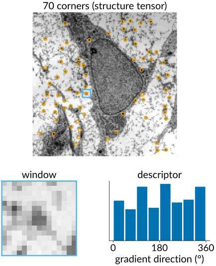
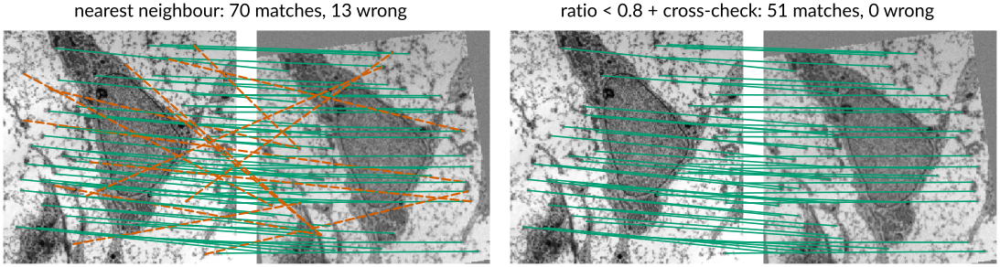
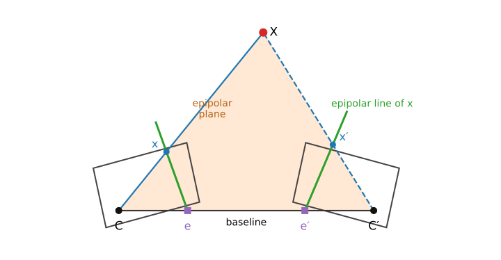
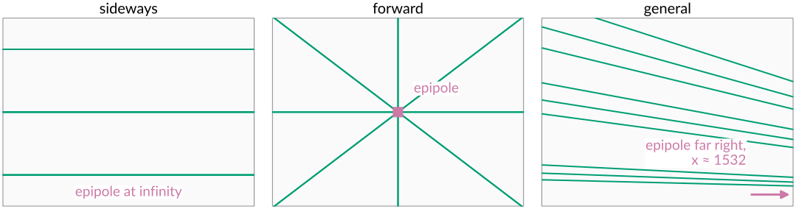
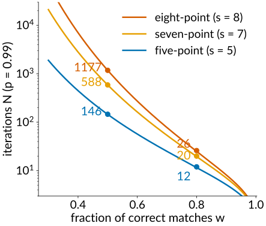
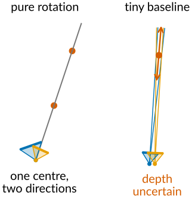
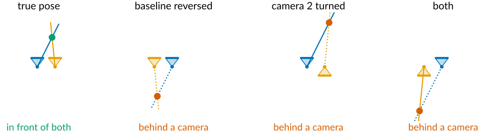
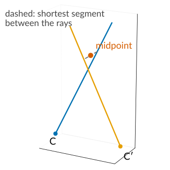
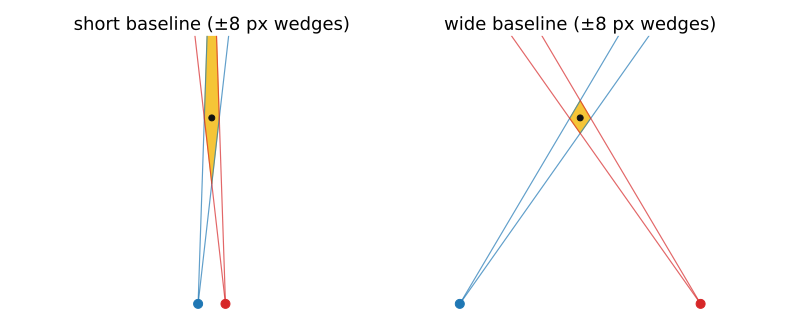

Two views: matches, epipolar geometry and triangulation
Image analysis
About this lecture
Last unit: one calibrated camera turns a pixel into a ray. Now two cameras see the same scene.
Correspondences: find the same point in both images.
Epipolar geometry: the match of a point must lie on a known line in the other image.
The essential and fundamental matrices: that constraint as one 3 \times 3 matrix.
Estimating it from point matches: the eight-point algorithm, inside RANSAC.
What it gives: the relative pose of the cameras, but not the scale.
Triangulation: from two rays to a 3D point, and how its error grows with depth.
Slides titled The math give the formulas and proofs; the ideas are complete without them.
Correspondences first
Geometry from two images needs the same physical point found in both.
Interest points: corners, where the structure tensor has two large eigenvalues, can be found again in another view (structure tensor unit).
Describe the window around each point, so that the same point looks the same in both images:
the normalised patch itself, compared with normalised cross-correlation (NCC: subtract the mean, divide by the standard deviation, then correlate; insensitive to brightness and contrast; the matching unit has the full story);
or a histogram of gradient orientations in the window, which survives small rotations and lighting changes (the standard descriptors of image libraries are of this kind).
A descriptor turns each interest point into a vector; similar points have nearby vectors.

Matching, and why it still goes wrong
For each point in image 1, take the nearest descriptor in image 2. Then throw out the doubtful ones:
Ratio test (Lowe): accept only if the best match is clearly better than the second best, e.g. distance ratio below 0.8. Distances 0.20 and 0.60: ratio 0.33, accept. Distances 0.30 and 0.32: ratio 0.94, ambiguous, reject.
Cross-check: accept only if each point is the other’s best match.
Even then some matches are wrong: repetitive texture (windows, tiles, a regular grid of cells) produces confident, wrong matches. So whatever we estimate from matches must survive outliers.

Epipolar geometry

The two camera centres and a 3D point span a plane, the epipolar plane. It cuts each image in a line.
The ray of \mathbf x lies in the plane; so does its match \mathbf x'. So \mathbf x' lies on a known line in image 2: the epipolar line of \mathbf x. The search for a match becomes 1D.
All epipolar lines pass through the epipole: the image of the other camera’s centre (where the baseline pierces the image plane).
Three motions, three pictures
Sideways (the second camera moved along the first one’s x axis, same orientation): the baseline is parallel to the images, the epipoles are at infinity, all epipolar lines are horizontal. Matches lie on the same row: the setup of stereo (next unit).
Forward (moved along the optical axis): the epipoles sit at the principal point, the epipolar lines radiate from it: the focus of expansion. Driving forward, everything streams outwards from it.
General motion: lines through an epipole somewhere, often far outside the image.
The epipolar lines depend only on the two cameras, not on the scene.

Essential and fundamental matrix
The epipolar constraint is a single 3 \times 3 matrix: a match (\mathbf x, \mathbf x') satisfies \mathbf x'^\top F\,\mathbf x = 0, \qquad F\mathbf x = \text{the epipolar line of } \mathbf x .
The essential matrixE: the same constraint for calibrated cameras (normalised coordinates K^{-1}\mathbf x). It depends only on the rotation and the direction of the translation between the cameras: 5 degrees of freedom.
The fundamental matrixF: in pixels, with both Ks folded in: 7 degrees of freedom. Needs no calibration at all.
Every epipolar line passes through the epipole, so F is singular (rank 2).
The math: from coplanarity to E and F
Put camera 1 at the origin; camera 2 sees \mathbf X_2 = R\mathbf X_1 + \mathbf t. In normalised coordinates \hat{\mathbf x} = K^{-1}\mathbf x, the vectors \hat{\mathbf x}', \mathbf t and R\hat{\mathbf x} (all in camera 2’s frame) lie in the epipolar plane, so
In pixels: \mathbf x'^\top K'^{-\top}EK^{-1}\mathbf x = 0, so F = K'^{-\top}E\,K^{-1}.
\det F = 0; the epipoles are the null vectors, F\mathbf e = 0 and F^\top\mathbf e' = 0.
E has two equal singular values and one zero ([\mathbf t]_\times has singular values \lVert\mathbf t\rVert, \lVert\mathbf t\rVert, 0; R does not change them).
Example, sideways: \mathbf t = (1, 0, 0), R = I: \hat{\mathbf x}'^\top E\hat{\mathbf x} = y - y', so y' = y: the same row.
Try it: epipolar lines
Estimating F: the eight-point algorithm
Each match gives one equation, linear in the 9 entries of F.
F has 8 entries up to scale (7 with the rank condition), so 8 matches give a linear solution: again a null vector, as for the DLT.
Force rank 2 afterwards: the closest singular matrix (set the smallest singular value to 0), so that all epipolar lines meet in one epipole.
Normalise first (shift and scale the points to mean 0, size about 1), or the pixel coordinates ruin the conditioning. In the demo, with 0.5 px noise, the true matches lie 0.41 px from the estimated epipolar lines with normalisation and 4.7 px without.
With more than 8 matches: least squares. Fine with noise, fatal with outliers: one wrong match pulls the whole solution.
The math: the eight-point algorithm
With \mathbf x = (u, v, 1), \mathbf x' = (u', v', 1) and \mathbf f the 9 entries of F row by row:
\mathbf x'^\top F\mathbf x = 0 \;\Longleftrightarrow\; (u'u,\ u'v,\ u',\ v'u,\ v'v,\ v',\ u,\ v,\ 1)\,\mathbf f = 0 .
Stack n \ge 8 rows into A; \mathbf f = right singular vector of the smallest singular value of A (minimises \lVert A\mathbf f\rVert with \lVert\mathbf f\rVert = 1).
Rank 2: F = U\,\mathrm{diag}(s_1, s_2, s_3)V^\top \to U\,\mathrm{diag}(s_1, s_2, 0)V^\top, the closest rank-2 matrix in the Frobenius norm (Eckart–Young).
Normalisation \hat{\mathbf x} = T\mathbf x, \hat{\mathbf x}' = T'\mathbf x': estimate \hat F, then F = T'^\top\hat F\,T.
Calibrated cameras: the five-point algorithm estimates E from 5 matches (Nistér, 2004); fewer points per sample matters for RANSAC (next slide).
Recall: RANSAC
From the RANSAC unit of the detection elective: guess and check.
RANSAC for the fundamental matrix
Sample 8 matches, fit F by the eight-point algorithm, count the matches within a few pixels of their epipolar lines, keep the best F, refit on its inliers.
Iterations for a 99 % chance of one clean sample: N = \log(1 - p)/\log(1 - w^s). With half the matches correct (w = 0.5):
minimal solver
sample size s
iterations N
eight-point (F)
8
1177
seven-point (F)
7
588
five-point (E, calibrated)
5
146
With 80 % correct matches: 26, 20 and 12. Small samples and few outliers keep RANSAC cheap; that is why minimal solvers matter.

The math: counting iterations, scoring matches
One sample of s matches is all-inlier with probability w^s. N samples all fail with probability (1 - w^s)^N; requiring this to be 1 - p: N = \frac{\log(1 - p)}{\log(1 - w^s)}, \qquad w = 0.5,\ s = 8,\ p = 0.99:\ N = \frac{\log 0.01}{\log(1 - 1/256)} = 1177 .
Scoring a match: the distance of \mathbf x' from the line F\mathbf x = (a, b, c) is |\mathbf x'^\top F\mathbf x| / \sqrt{a^2 + b^2} (in pixels). Using both images, the first-order geometric (Sampson) error is \frac{(\mathbf x'^\top F\mathbf x)^2}{(F\mathbf x)_1^2 + (F\mathbf x)_2^2 + (F^\top\mathbf x')_1^2 + (F^\top\mathbf x')_2^2}.
Try it: estimating F with outliers
When there is no epipolar geometry
Pure rotation (the camera turns about its centre, no baseline): every point keeps its ray, so there is no depth information at all. The two images are related by a homography (that is how panoramas are stitched). F is undefined.
All points on one plane: the matches are also related by a homography, and a whole family of F fits them. The eight-point system has more than one null vector.
Tiny baseline: nearly pure rotation; F and depth are both badly determined.
Check for these before trusting an estimated F: if a homography explains the matches as well as F does, the geometry is degenerate.

From E to the cameras: rotation and direction, not scale
With calibrated cameras, the essential matrix gives the relative pose:
the rotationR between the cameras, and
the direction of the translation \mathbf t, but not its length.
Four candidate poses come out; only one puts the points in front of both cameras.
The scale is lost: a scene twice as large and twice as far away gives exactly the same two images. Scale comes from outside: a known length in the scene (a scale bar, a calibration object), a known baseline (a stereo rig), or another sensor.

The math: decomposing E
Write E = U\,\mathrm{diag}(1, 1, 0)\,V^\top (with \det U = \det V = 1) and W = \begin{bmatrix} 0 & -1 & 0 \\ 1 & 0 & 0 \\ 0 & 0 & 1 \end{bmatrix}. Then
R \in \{UWV^\top,\ UW^\top V^\top\}, \qquad \mathbf t = \pm\mathbf u_3 \quad(\text{the third column of } U).
Four combinations. Cheirality: triangulate a few points with each; keep the pose that puts them at positive depth in both cameras.
\mathbf t comes out with length 1: the scale is a free parameter of the reconstruction (a “gauge”, unit 4).
Triangulation
Two matched pixels give two rays. In theory they meet in the 3D point; with noise they miss.
Midpoint: the middle of the shortest segment between the rays. Simple, slightly biased.
Linear (DLT again): 4 equations for the point, a null vector.
Optimal: the 3D point whose projections lie nearest the observed pixels (minimise the reprojection error).
Without noise all three give the exact point. With noise the optimal one is best, and differences grow when the rays are nearly parallel.

How good is the depth?

A pixel of uncertainty is a thin wedge from each camera; the wedges meet in a long, thin region.
It is long along the viewing direction: the depth is much less certain than the sideways position.
Error grows with depth² and shrinks with the baseline: two parallel cameras with f = 800 px, B = 0.1 m: matches at x = 420 and x' = 400 (d = 20 px) give Z = 800 \cdot 0.1/20 = 4 m; one pixel less or more gives 4.21 or 3.81 m.
Wide baseline: better depth, but the views differ more, and matching gets harder. A third view shrinks the region.
The math: triangulation
Linear: \mathbf x \times P\mathbf X = 0 and \mathbf x' \times P'\mathbf X = 0 give 4 independent equations in the homogeneous \mathbf X (4 entries): the null vector of a 4 \times 4 matrix.
Midpoint: rays \mathbf c + s\mathbf d and \mathbf c' + t\mathbf d'; minimise \lVert\mathbf c + s\mathbf d - \mathbf c' - t\mathbf d'\rVert^2 over s, t (a 2 \times 2 linear system); take the middle of the segment.
Error, parallel cameras: Z = fB/d with disparity d = x - x', so \delta Z \approx \left|\frac{\partial Z}{\partial d}\right|\delta d = \frac{fB}{d^2}\,\delta d = \frac{Z^2}{fB}\,\delta d . With independent pixel noise \sigma in both images, \delta d has standard deviation \sqrt 2\,\sigma.
Try it: triangulation in flatland
Summary
Geometry needs correspondences: interest points, descriptors, nearest neighbours with a ratio test and cross-check; some matches are still wrong.
Epipolar geometry: a point’s match lies on a line through the epipole; sideways motion gives rows, forward motion lines from the focus of expansion.
\mathbf x'^\top F\mathbf x = 0: F in pixels (7 dof), E for calibrated cameras (5 dof). Estimated from \ge 8 matches, normalised, forced to rank 2, inside RANSAC.
Degenerate: no baseline (pure rotation) or all points on one plane: a homography instead.
E gives rotation and translation direction; the scale needs outside information.
Triangulation: rays from matched pixels; depth error grows with depth², shrinks with baseline.